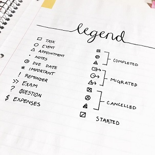
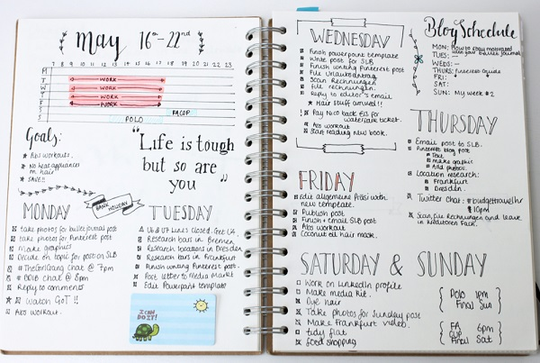

What is Bullet Journaling?
The bullet journal system was developed by Ryder Carroll, a digital product designer based in New York City. He was diagnosed with a learning disability at a young age, and created this methodology to help him stay organized and be productive. This system records past events or tasks, organizes the present, and helps you plan for the future.
The majority of content in the bullet journal is written in point form, hence the name. You can bullet journal using any notebook, but our Mind to Matter Original Journals were designed with an index to help you keep track of your spreads in a Table of Contents format.
To begin, develop a legend key that you will use consistently throughout the journal. This example has different bullet point shapes to indicate what type of content it is referring to, and how it is filled in indicates the status.
Next, set up the future log by writing out all the months on the page. This is where you write down tasks or events that happen in the future, or do not have a specified date. This only has to be set up once in the beginning of the journal.
Afterwards, set up the monthly log by sketching out a calendar or writing down all the dates. This monthly log is set up at the start of every month. It is where you write down monthly tasks or goals with a specified date.
Finally, set up your daily log by using the current date as the header. This is where you will log all your tasks for the day using the bullets that you defined in your legend key earlier. This should be set up daily, and will help its users develop a habit.
Other fun things that many people include are habit trackers, mood trackers, expense logs, and lists! The beauty of bullet journaling is that it is designed to be flexible to your life, you can add content you like and switch up your monthly log as you find features that work well with your schedule. Want to write a diary entry after setting up your daily log? Go ahead – the possibilities are endless!
If you want to learn more about bullet journaling, AmandaRachLee on Youtube is a fellow stationery lover who makes informative videos about the system.